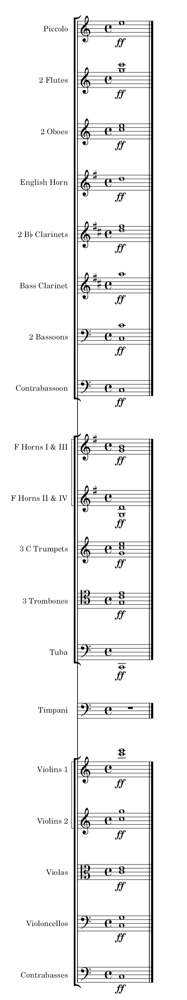

Welcome to the Composition Tips & Tricks wiki developed by Purdue University's Composition & Theory Club. This guide contains a vast library of tips and tricks developed by music composers, theorists, and orchestrators from Purdue. It's designed to help you explore new ideas in modern music composition and develop your own voice. We hope this reference serves as a guide to make music that you love and discover ideas beyond those typically covered in standard music composition classes.
When we think about music, one of the most important things we tend to think and talk about is "What does
it sound like?"
But what does such a question really mean?
It's difficult to answer this without diving into specifics. The objective quality of
music is dependent on many different factors, and since music changes from moment to moment, the quality
of the sound can change rapidly as well. Rectifying all of that information into a brief description can
make it easier to
communicate with other people, especially to the average listener. But to truly understand music and
why it sounds the way that it does, we have to go beyond simplicity.
We tend to use the word texture to describe how musical elements contribute to an
overall quality of sound. This includes instrumentation,
dynamics, technique, articulation, and
overall scoring
approach. Texture can be described objectively, by referencing specifical musical elements,
or subjectively, by describing how the music sounds to us overall. For example, take a look at the
following chord below scored for a full symphony orchestra, and consider the following questions.
Assume a typically-sized symphony orchestra with three instruments per wind family (flutes,
oboes, clarinets, and
bassoons), four horns, three trumpets, three trombones, tuba, percussion, and strings. An
instrument family consists of a primary instrument (like flute or oboe) and all its
auxiliaries (like piccolo or English horn).

The first two questions are the easiest to answer, and the least ambiguous. This chord takes advantage of
the entire orchestra, save for the percussion. The dynamic is fortissimo for all instruments.
Keen listeners will point out that the trombones and horns are extremely prominent in this
chord,
alongside the C6 shared by first violins and first flute. The lowest note, shared by contrabasses,
tuba, and contrabassoon, may stick out as well. This is due to the scoring approch as well as the choice
of playback
samples.
If you want to experiment with playback samples, we encourage you to click the image to
download a .mscz file containing the chord. You can modify it, play it back, or change samples to see
how it changes the overall quality of the chord.
As for noticable scoring patterns, you may notice that the trumpet notes are an octave above the pitches in the trombones. You may also notice that the oboe family and clarinet family double each other at the same pitches when accounting for the transposition, and that the flute family is playing an octave above both of them. There are many more, and we encourage you to identify some other ones.
The last question is the most ambiguous and answers will differ from person to person. You may describe the sound as bright, joyous, or energetic. Unlike the previous questions, there is no right answer, since there isn't a "correct" way to describe how the chord feels to you overall. That being said, it's probably the most important of all of these questions when it comes to writing music. Why? How this harmony feels to you will likely influence your compositional choices and ideas.
Pause for a moment, and try to describe the chord using a few adjectives.
If you have a tendency
to descibe this chord with positive adjectives, such as joyous or elating, you're likely to use chords
like this more often in your own writing. Likewise, if you tend to use negative adjectives to describe
this chord, such as blaring or pompous, you may avoid using chords like this.